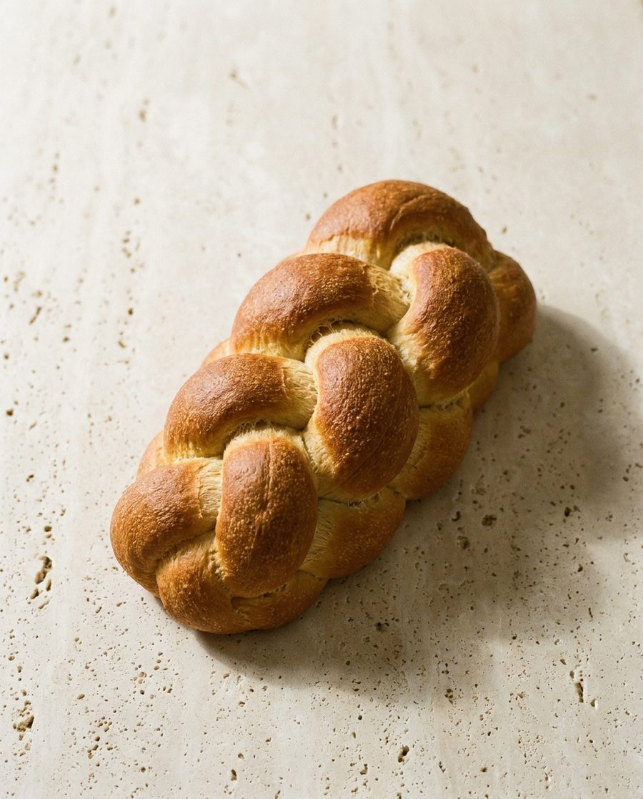
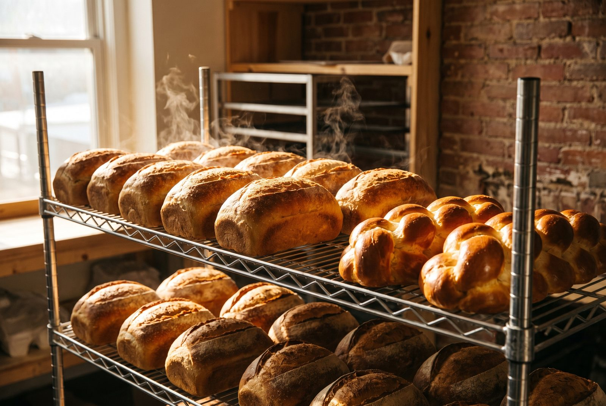
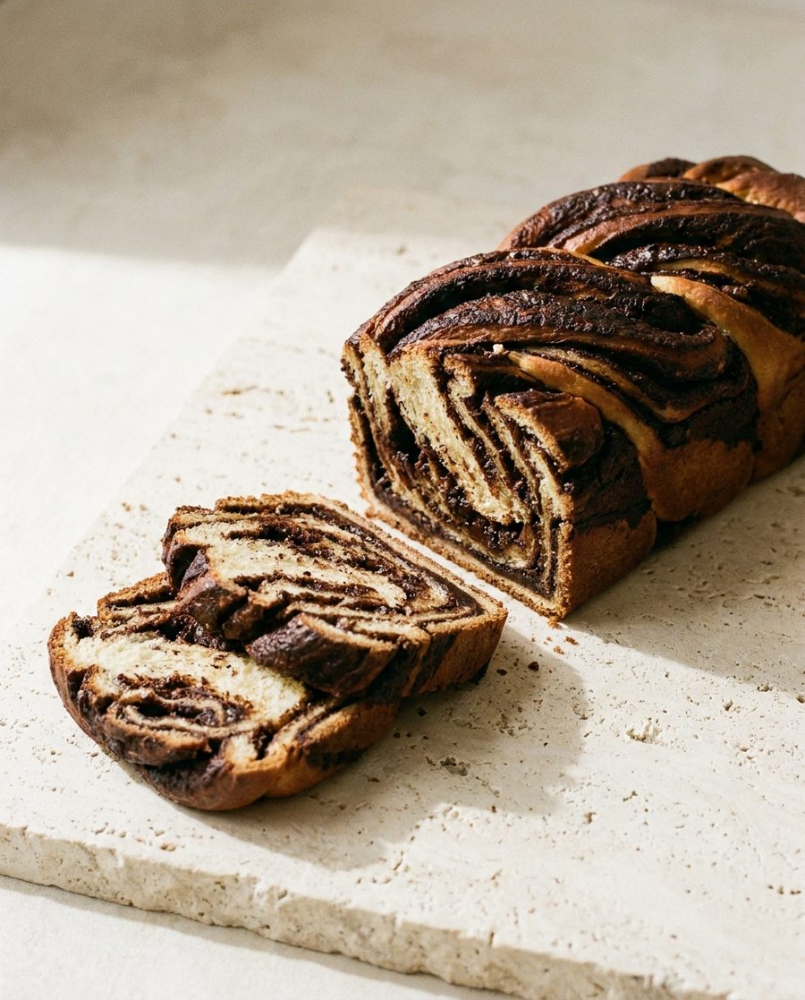
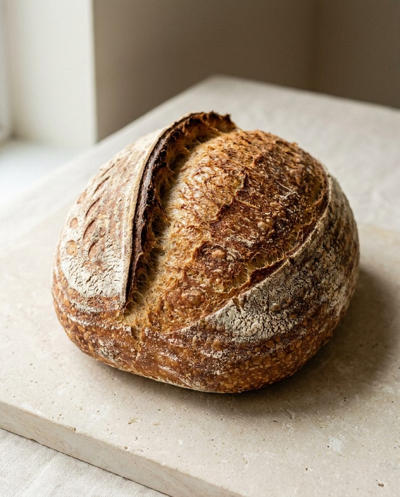

Six strands. A long cold prove, brushed twice.

A small bakery on Emek Refaim since 1998. Everything on the shelf was baked in this room today.
See what is on the counterFlour, water, salt, and a starter that has been fed every day since the year the shop opened. Nothing else, which is why the list on the wall has never needed a second page.
Batya opened with one oven and her mother's proportions. The proportions have not changed. The oven has, twice.

Every loaf is shaped by hand.
By whoever is in that morning.
It is the slowest part of the day, and nobody has agreed to speed it up.

Steam for the first ten minutes. Then you wait.
Out of the oven at twenty to, on the shelf by the time you are standing here.
Baked in one batch each morning. When a shelf is empty, that is the day.

Six strands. A long cold prove, brushed twice.

Laminated Thursday night, baked Friday morning.

Twelve. Still warm if you are here before nine.

One starter, fed since the year we opened.
Shabbos orders close Thursday at two.

Kosher, Rabbanut Yerushalayim
Tell us what you want and when you are coming. It will be wrapped and waiting with your name on it.
Message the bakery